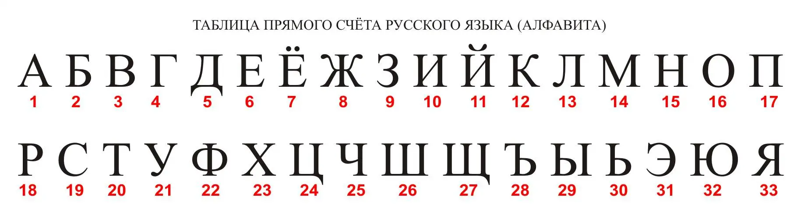

Введение
Жил да был в Древнем Риме наш герой, Гай Юлий Цезарь – да, да, тот самый, который выиграл в гражданской войне и стал императором, мог делать сразу несколько дел одновременно и сражался с Астериксом и Обеликсом. Что, что? Да, ещё салат есть такой (к которому наш Цезарь, между прочим, не имеет ни малейшего отношения). В те времена Цезарь наделал много шуму, и не был бы он так успешен, если бы не его харизма и необычайно острый ум – чего стоят одни его цитаты. Вот, поглядите.
Жзапэг, кщаыьг, жёшьыаг.
— Ъчб Хгаб Ньячзу
Эту известную цитату вы наверняка слышали не один раз... Постойте, куда же вы, не уходите, это правда его цитата, просто она зашифрована, и на первый взгляд кажется, что это бессмысленный набор букв. Но вы удивитесь, насколько просто можно её расшифровать – достаточно лишь знать алгоритм шифрования.
Видимо, нужно сделать небольшое отступление для тех, кто "не в теме" и вообще никогда не слышал про криптографию, шифртексты, ключи и другие странные словечки. Информация всегда была важнейшим фактором на протяжении всей истории человечества, например, узнав численность вражеского войска, и где размещены его отряды, опытный полководец без труда сможет придумать тактику и разбить армию врага. Или, например, вам по секрету сказали, что через несколько дней начнётся распродажа бытовой техники с большими скидками, и вы теперь стали носителем сокровенной тайны и радуетесь, что окажетесь в числе немногих счастливчиков, кто урвёт себе дешёвую стиралку. С древних времён повелось посылать гонцов из одного места в другое, чтобы передать эту важную информацию. Время шло, гонцы уже давно отправлены на свалку истории, ведь появился интернет и протоколы передачи информации, но на самом деле перехватить информацию всё так же просто.
И с тех же древних времён люди задумались, а как бы эту информацию передать так, чтобы "свои" смогли её прочесть и купить пару биткойнов по выгодной цене, а "чужие", даже если перехватят гонца, увидят вместо сообщения непонятную мешанину и, покрутив пальцем у виска, отпустят гонца вместе с этой ерундой (конечно, гонцу категорически нельзя сообщать, что содержится в сообщении и как взломать шифр). Удобно, согласитесь? Вот так и возникли криптография и криптоанализ – науки о том, как скрыть то, что открыто, и открыть то, что скрыто.
Так вот, возвращаясь к нашему герою - Цезарь, как мы уже знаем, был не дурак и наиболее ценные сведения, например, о положении вражеских войск, пересылал своим генералам именно в зашифрованном виде при помощи особого шифра. И хотя в дальнейшем мы покажем, что этот шифр взломать сейчас может даже ребёнок, но в те времена люди (по большей части) понятия не имели о каких-то там шифрах. Ещё помните о цитате? По-прежнему никаких идей? Так давайте же рассмотрим метод, который вошёл в историю под названием метода шифрования Цезаря, яркого представителя шифра простой замены.
Суть метода
Введите произвольный текст в первое текстовое поле (можно чередовать строчные и прописные буквы русского или английского языков) и выберите значение ключа. Во втором текстовом поле вы увидите что-то странное...
Исходный текст:
Ключ:
Шифртекст:
Поздравляю, вы только что зашифровали свой текст! Теперь ваша информация будет в безопасности (какое-то время). Полученное зашифрованное сообщение принято называть шифртекстом, а то, с помощью чего был зашифрован исходный текст – ключом шифрования. Для метода Цезаря, зная ключ, можно с лёгкостью расшифровать сообщение (впрочем, не зная его, расшифровать тоже не составит труда, что мы покажем далее). Такой вид шифрования называется симметричным, поскольку и при шифровании, и при дешифровании используется один и тот же ключ. Попробуйте выбрать другое значения ключа и посмотрите, что получится.
А теперь сотрите всё, что вы там зашифровали, и введите в строку последовательно все буквы русского (английского) алфавита по порядку и выберите значение ключа. Только не говорите, что не помните алфавит на память. Ладно, так и быть, можете нажать на ссылки, и алфавиты вставятся сами ( русский, английский, кликабельно).
Обратите внимание, что шифртекст в точности совпадает с исходным текстом, но с одной особенностью – он как будто бы сдвинут влево на некоторое количество символов, а сдвинутые начальные символы переместились в конец шифртекста. Кажется, вы начинаете понимать, не так ли? Именно в этом и заключается суть метода шифрования Цезаря – каждый символ в исходном тексте заменяется символом, находящимся на некотором постоянном смещении от него в алфавите, а это смещение и есть ключ.
Сейчас будет немного математики, но не пугайтесь, она несложная, просто с помощью неё гораздо удобнее описать процесс шифрования/дешифрования (картинки честно украдены с Википедии):


где x – символ исходного сообщения, y – символ шифртекста, n – число букв в алфавите, k – ключ шифрования, mod – операция взятия остатка от деления. Как видите, всё очень просто.
Для тех, кому не очень просто (или вообще ни разу не просто)
- Предположим, мы захотели отправить некоторые важные сведения своему другу, например, что вечером в магазин привезут свежий хлеб, и чтобы успеть его купить, нельзя допустить, чтобы остальные узнали об этом, иначе на свежачок сбежится весь город. Для этого нужно предварительно договориться о ключе, которым вы оба будете пользоваться в ваших тайных переписках. Пусть ключ будет равен 10.
- Вы пишите записку, например, "сегодня вечером будет привоз хлеба" (для повышения секретности можно написать "орел, кукушка в гнезде, кукушка в гнезде", а ваш друг, проявив чудеса дедукции, догадается, что вы на самом деле имели ввиду). Используя вторую формулу, вы начинаете побуквенно его шифровать:
- В первом слове буква "с" в алфавите имеет порядковый номер 19 (под рукой желательно иметь таблицу с буквами), ключ равен 10, следовательно, первая буква шифртекста будет иметь порядковый номер в алфавите 19+10=29, то есть "ы". 
- Вторая буква исходного сообщения шифруется аналогично – "е" в алфавите имеет порядковый номер 6, после шифрования она превращается в букву "о" (порядковый номер 6+10=16).
- Последующие символы вашего текста шифруются аналогично. В итоге вы получите шифртекст "ыомшнчи лобоъшц кэноь щътлшс яхокй".
- Вы отправляете гонца с зашифрованной запиской вашему другу (напоминаю, гонец понятия не имеет, что содержится в записке, и уж тем более не знает ключа).
- Ваш друг получает ваш шифртекст и, используя известный только вам двоим ключ, начинает дешифровать текст по первой формуле, но думаю, вы и так догадываетесь, что в данном случае надо вычитать значение ключа из позиции буквы в алфавите. Но давайте проделаем это для наглядости:
- В первом слове шифтекста буква "ы" в алфавите имеет порядковый номер 29, ключ равен 10, следовательно, первая буква исходного сообщения будет иметь порядковый номер в алфавите 29-10=19, то есть "с".
- Вторая буква шифтекста дешифруется аналогично – "о" в алфавите имеет порядковый номер 16, после дешифрации она превращается в букву "е" (порядковый номер 16-10=6).
- Последующие символы шифртекста дешифруются аналогично. В итоге ваш друг получит исходное сообщение и обрадуется, ведь наконец-то у него есть шанс вкусить свежего хлеба.
- Погодите-ка, скажите вы, а что будет, если сумма позиции буквы и ключа будет больше порядкового номера последней буквы алфавита? Например, как зашифровать букву "ч" (позиция 25) при длине ключа 10? Это что же получается, надо взять 35-ую букву алфавита??? Нет, это не шарлотанство – надо брать не просто 35-ую букву, а 35-ую букву по модулю длины алфавита, или же взять остаток от деления 35/33, т.е. 2. А этой позиции соотвуетствует буква "б". Таким образом обеспечивается циклический сдвиг, алфавит закольцовывается, и после последней буквы вновь пойдёт первая. и после этого вы понимаете, что ничего уже не понимаете
Интересное следствие: ключ 34 будет равен ключу 1. И даже ключ 1090 будет равен ему же. То есть всего возможных ключей шифрования будет на единицу меньше, чем букв в исходном алфавите (и тут вы осознали, что китайцы хитрее, чем кажутся).
Взлом
Вы, счастливые обладатели секретной информации, захотели поделиться ею со своим другом. Вы составляете текст, и чтобы никто кроме вас двоих не смог его прочитать (наивные), вы шифруете его с помощью секретного ключа и отдаёте записку гонцу, который немедленно помчался доставлять её адресату.
Но вот беда – решив сократить дорогу, гонец забредает в переулок, где его уже дожидается банда Зелёных Криптоманов (даже не спрашивайте). Они отбирают у гонца записку, видят там какую-то ерунду и начинают его допрашивать, но вскоре понимают, что он ничего не знает. И тут вожак банды соображает, что это не просто бессмысленный набор букв, а зашифрованное послание, и начинает вспоминать, как когда-то давно, ещё до того как его выгнали из института, на лекциях по криптозащите он слышал про какой-то метод...
На самом деле их даже два – метод простого перебора и частотный анализ. Первый метод попроще, требуется лишь только знать алфавит с символами шифртекста и позиции его букв. Для второго метода кроме этого понадобится знать частоту повторения букв алфавита в тексте, но его мы рассмотрим позднее.
Под "простым перебором" здесь имеется ввиду банальный перебор всех возможных ключей шифрования. Например, для английского языка это 25 ключей, для русского – 32, и т.д. (за пояснениями идите в спойлер в прошлом разделе). Причём перебирать все варианты необязательно, ведь как только шифртекст после очередного сдвига предстанет в осмысленном виде, то ключ был найден.
Пример: Бандиты ловят гонца, отбирают у него записку с шифртекстом "Юячруб, ычя!", чешут в затылке, пока кто-то не восклицает "Эврика! Да ведь это же шифр Цезаря!" и приступают к дешифрованию, последовательно сдвигая символы на 1 позицию влево:
- Эюцпта, ъцю!
- Ьэхося, щхэ!
- Ыьфнрю, шфь!
- Ъыумпэ, чуы!
- Щътлоь, цтъ!
- Шщскны, хсщ!
- Чшрймъ, фрш!
- Цчпилщ, упч!
- Хцозкш, тоц!
- Фхнжйч, снх!
- Уфмёиц, рмф!
- Тулезх, плу!
- Сткджф, окт!
- Рсйгёу, нйс!
- Привет, мир!
Как только они получили осмысленный текст, то фиксируют номер итерации – это и будет значение ключа шифрования (для данного примера ключ равен 15). Все наши усилия по скрытию важной информации пошли прахом...
Попробуйте самостоятельно вычислить ключ шифрования у следующего текста: "Ёылж о Ёжылц оёлыж зазоылц" (кликабельно). Воспользуйтесь формой снизу, последовательно перебирайте ключи до тех пор, пока не получите осмысленный текст.
Исходный шифртекст:
Ключ:
Расшифровка:
Вы может и не заметили, но отличие этой формы от той, что выше, заключается в том, что в первом случае символы сдвигались вправо (что соответствует сложению со значением ключа), а во втором – влево (что соответствует вычитанию значения ключа).
Итак, мы добрались до самого интересного, а именно, частотного анализа. Тема эта очень обширная, и целиком рассматривать её здесь мы не будем, лишь ограничимся её применением для взлома шифра Цезаря. Наверняка вы замечали, что некоторые буквы в нашем алфавите повторяются в словах чаще других – например, гласные "а", "о", "и", "е" встречаются гораздо чаще, чем такая экзотика, как "ъ", "ц", "э". Про бедную-несчастную букву "ё" я вообще молчу, её старательно пытаются вывести из состава русского алфавита!
Естественно, невозможно точно посчитать частоту появления той или иной буквы, ведь язык постоянно меняется, появляются новые слова, поэтому обычно берут средние значения, анализируя тексты очень большого объёма (например, "Войну и мир", "Большую советскую энциклопедию", "Сборник анекдотов" за 1968 год и т.д.). Ниже в гистограмме приведена статистика частот появления букв русского языка.
Числа по вертикальной оси означают вероятность появления того или иного символа. То есть, если вы закроете глаза и ткнёте наугад в какую-нибудь букву в тексте, то именно с этой вероятностью вы попадёте именно в неё. Вы спросите, да причём здесь вообще какие-то вероятности? А очень даже причём – дело в том, что в сдвинутом алфавите вероятности появления букв... также сдвигаются! Причём на то же самое значение ключа. А из этого, как мы покажем дальше, для больших текстов можно с большой точностью определить ключ, просто посмотрев на распределение вероятностей, не перебирая все возможные значения ключей.
Проведём наглядную демонстрацию. В форму ниже введите произвольный текст (чем больше, чем лучше, в идеале сочините эссе, поэму, роман, записки сумасшедшего). На новой гистограмме будет в реальном времени отображаться подсчёт введённых букв, а точнее, частота их появления (красные столбики). Сравните полученные значения с теоретическими (зелёные столбики).
Ваш текст:
Ключ:
Шифртекст:
Если вы ввели недостаточно большой текст, который, к тому же, не пестрит разнообразием букв, то частотный анализ ничего не покажет. А теперь попробуйте вставить вот этот шифртекст (кликабельно) и последовательно уменьшать значение ключа (что означает вычитание его значения из позиции символа шифртекста). Видите? Вся ваша гистограмма смещается влево.
А теперь, внимание, самое интересное - как по этой гистограмме определить значение ключа? Да очень просто - продолжайте сдвигать её до тех пор, пока частота самой часто встречающейся буквы вашего текста не будет примерно равна частоте самой часто встречающейся буквы алфавита, на котором написано сообщение, а величина ключа будет находиться как разность позиций этих букв. Для данного примера, между "ё" и "я" расстояние равно 7, значит ключ будет равен 7.
Теперь я думаю, вы догадываетесь, почему этот метод не пригоден для расшифровки небольших шифртекстов, где статистика появления букв весьма отличается от "теоретической". В таких случаях нередко бывает, что наиболее часто встречающаяся буква не совпадает с теоретической (например, если вы по каким-то причинам боитесь буквы "о" и избегаете её использование в своей речи и письме), и тогда частотный анализ даст ошибку, хотя по сути вы всё делали правильно. В таких случаях считается, что метод шифрования Цезаря обладает более сильной криптографической стойкостью, нежели чем при шифровании больших текстов.
Подведём итоги. Хоть метод шифрования Цезаря и является тривиальным по современным меркам и легко расшифровывается, он по-прежнему может использоваться для передачи коротких сообщений. К нему можно применить частотный анализ, но только в том случае, если им зашифрован большой объём текста. Тем не менее, метод до сих пор актуален, и его зачастую включают в состав более сложных алгоритмов шифрования, чтобы окончательно запутать перехватчика информации.
Надеюсь, информация была вам интересна, и это лишь крошечная часть того, с чем приходится иметь дело тайным агентам, супершпионам и контрразведчикам. А теперь вернитесь к цитате и с помощью второй формы попробуйте дешифровать её. Частотный анализ здесь не поможет, ведь текст очень короткий, поэтому придётся вам перебрать некоторое значение ключей...
Шифртексты
Дамы и господа, вашему вниманию предлагаются шифртексты, тщательно отобранные у неосторожных гонцов. Доподлинно известно, что все они зашифрованы с использованием метода Цезаря, а ваша задача – расшифровать их, применяя тот или иной способ взлома. GL HF!
Шифртекст #1
Йчйдбуи – ёыч риуфимцчт учцъыщьуыскцдт ёфнхнцы, учычщдт, цнриксъсхч чы чъчйнццчъынт учцъыщьуясс с съшчфцнцсз, шщнмцирцианц мфз йнрчшиъцчт кщнрус учцыщчфецч-срхнщсынфецдю ьъыщчтъык к ыщьйчшщчкчмд. Йчйдбус мфз миыасучк ынхшнщиыьщд ьъыицикфскижыъз ци цьпцчх чйгнуын ъ шчхчвеж шщсхнцнцсз ъкищус. Цибс йчйдбус мфз миыасучк ынхшнщиыьщд шщнмъыикфзжы ъчйчт цнйчфебчт ьаиъычу ычфъычъынццчт ыщьйд ъ кцьыщнццсх щнрейчкдх ъчнмсцнцснх ъ чмцчт ъычщчцд, ъ мщьлчт ъычщчцд йчйдбуи шщскищскиныъз у ыщьйчшщчкчмь, аыч шчркчфзны цимнпцч ьъыицикфскиые цнчйючмсхдн шщсйчщд с фнлуч рихнцзые сю цчкдхс. Ынщхчхныщ к учхшфнуын ъ йчйдбучт с лсферчт щийчыины уиу ъфипнццдт нмсцдт хнюицсрх, учычщдт шчркчфзны мчйсыеъз хифчлч кщнхнцс щнилсщчкицсз ци ъыьшнцаиычн срхнцнцсн ынхшнщиыьщд. Мфсци, щнрейи с учцъыщьуыск йчйдбус чшщнмнфзжыъз шчыщнйцчъызхс хчцыипи с щнрейчт хчцысщьнхчлч шщсйчщи.
Шифртекст #2
Н ьо бупу, щощ ьо рэшьу,
О ьо рэшьу, щощ ьо бупу.
Ьэ н вабоъ, эщэьёуь пэш –
Пуяв юэябрушь, чтв тэыэш.
Эщэьёуь пэш, цоёод эсэьк
Ч ьу эабоъэак ьчёусэ.
О ый хчруы, о ьоы а бэпэм
Юэруцъэ ьоцъэ.
Шифртекст #3
Язщцйбрт Язт ярхру яылмщхгм язщг, ярщъру ямшхцщурй,яръзу язщъыатр. Язизхз ямщъйцйзу яъмю. Яро, ярирщ, ямянътз язйтзур, яршртзур, ярэзур, яылзямщъйцйзур. Яыомпмфмю яръзу ямъймшцщърарж, ярщъру ямшмщяыш яншхгс ямшлзт.
Шифртекст #4
Ъжк щу ъачкф б йкшкф ъэалпбе
Пкжщу ъйю гшг л дцьэв
Пкжщ кэздж ъ ежижа киэйглпбв
Пкжщу дэкж щэа ьжяьэв
Пкжщ ьилафч аъжёбдб пшсэ
Лаёшъшч пкж ьш гшг
Пкжщ ёэышьшёёжэ йпшйкфэ
Зижйкж кшг
Шифртекст #5
Пв яфро дуз, дужо усвукгр йв дпковпкж, к ёв стжгхёжф двъв кпцртовшкб д фвлпж!